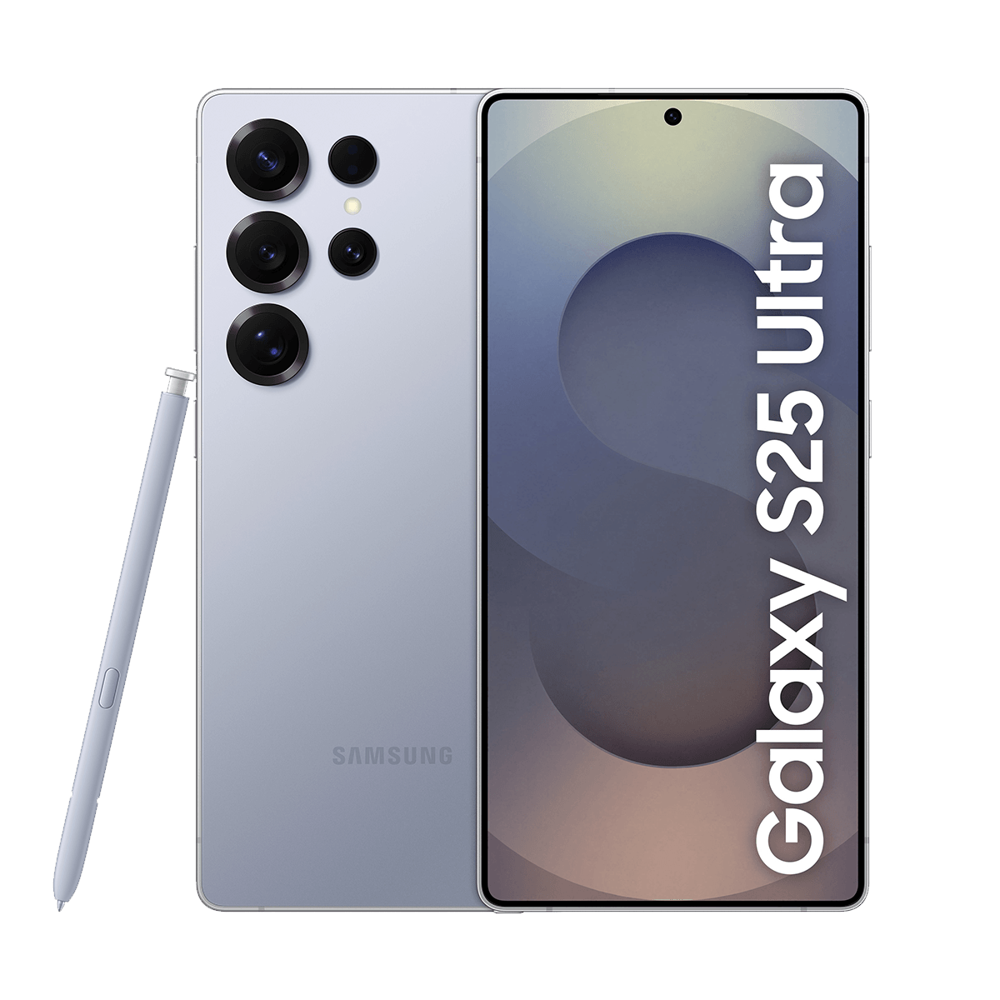

該選哪部手機
答案:選SAMSUNG就對了
:D
×

以下為SAMSUNG、apple、小米最新一代的手機評價
優點:擁有最新的AI技術，透過AI只需要用口語的對話說明，就能輕鬆完成日常工作。一早便可獲得當日的詳細報告 ，例如檢查你的最新身體能量指數，以及繁忙行程的提醒。然後，在晚上用日常活動洞察回顧當天的事件。
缺點:手機容易過熱，打遊戲時畫質不穩定
優點:1. 顯示效果卓越 配備 6.9 吋 ProMotion 顯示器，支援 120Hz 高更新率，帶來流暢的滑動與動畫效果。 2. 強大效能 搭載 A18 Pro 晶片，無論是日常使用、遊戲、或多工處理，都能提供順暢的體驗。
缺點:1. Apple Intelligence 功能區域限制 部分 Apple Intelligence 功能目前僅在特定地區提供，可能無法在台灣完整體驗。2. 售價較高 起始價格為 NT$44,900，對於預算有限的消費者來說，可能需要考慮。
優點:沒有優點
缺點:鏡頭太醜、中國製造、隱私沒安全感、共產主義
答案:選SAMSUNG就對了
:D